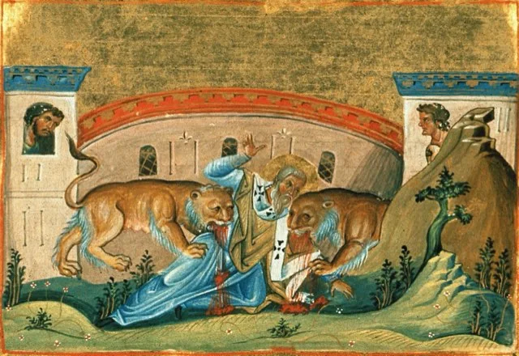
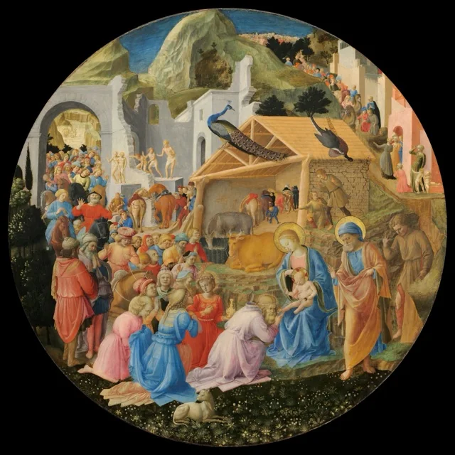

The Apostolic Fathers
4 writings-
 AD 100Late 1st or early 2nd century AD
AD 100Late 1st or early 2nd century AD
The Didache (The Teaching of the Twelve Apostles)
Anonymous
A short early church manual: the ‘Two Ways’ of life and death, then instructions on baptism, fasting, the Lord’s Prayer, eucharistic prayers, travelling prophets, Sunday worship and the Lord’s coming. A window on how early communities lived their devotion to Jesus.
→ -
 AD 96c. AD 96 (traditional date)
AD 96c. AD 96 (traditional date)
The First Epistle of Clement to the Corinthians
Clement of Rome (attributed)
A letter from the church at Rome to the church at Corinth, traditionally dated c. 96. It recalls the deaths of Peter and Paul, quotes sayings of Jesus, and says the apostles were sent by Christ and appointed leaders after them.
→ -

AD 110c. AD 110 (debated)Ignatius of Antioch, Letter to the Smyrnaeans
Ignatius of Antioch
Written by the bishop of Antioch on his way to execution in Rome. He insists that Jesus was truly born, truly nailed to the cross under Pontius Pilate and Herod, and rose in the flesh. The first text to speak of ‘the Catholic Church.’
→ -
 AD 120c. AD 110–130
AD 120c. AD 110–130
Papias of Hierapolis, Fragments
Papias of Hierapolis
Quotations from a lost early-2nd-century work by the bishop of Hierapolis, who sought out what followers of the apostles remembered. They include the earliest statements about how the Gospels of Mark and Matthew were written.
→
Defenders and teachers
5 writings-
 AD 153c. AD 150–155
AD 153c. AD 150–155
Justin Martyr, First Apology
Justin Martyr
A Christian philosopher’s defence addressed to Antoninus Pius. It says Jesus was crucified under Pontius Pilate, argues from the Hebrew prophets, and gives the earliest full description of baptism, the Eucharist and Sunday worship, where ‘the memoirs of the apostles’ were read.
→ -
 AD 180c. AD 180
AD 180c. AD 180
Irenaeus of Lyons, Against Heresies, Book I
Irenaeus of Lyons
Irenaeus sets out the ‘Rule of Faith’ the churches had received from the apostles and describes the Gnostic teachers he opposed, from Valentinus to Basilides, Cerinthus and Marcion, and the sect that produced a Gospel of Judas.
→ -
 AD 180c. AD 180
AD 180c. AD 180
Irenaeus of Lyons, Against Heresies, Book III
Irenaeus of Lyons
The classic second-century defence of the four Gospels: how Matthew, Mark, Luke and John came to be written, why there are four and only four, and the succession of bishops from the apostles in Rome and Smyrna.
→ -
 AD 230c. AD 225–235
AD 230c. AD 225–235
Hippolytus, Refutation of All Heresies, Book IX
Hippolytus of Rome (attributed)
A Roman presbyter attacks teachers of his own day who said the Father and the Son were one and the same, including Bishop Callistus, and the Elchasaites. It shows how sharply Christians in Rome were arguing about who Christ is in the early 3rd century.
→ -
 AD 248c. AD 248
AD 248c. AD 248
Origen, Against Celsus, Book I
Origen of Alexandria
Origen replies to Celsus, a 2nd-century critic who called Jesus the son of a soldier named Panthera and a magician trained in Egypt. Along the way he cites Josephus on ‘James the Just, the brother of Jesus (called Christ).’
→
The first history of the Church
4 writings-

AD 320Early 4th century AD (completed c. 325)Eusebius, Church History, Book I
Eusebius of Caesarea
The opening book of the first history of the Church. It sets Jesus in the time of Augustus, Herod, Pilate and Caiaphas, quotes Josephus on John the Baptist and Jesus, and gives the Edessa story of King Abgar’s letter to Jesus.
→ -
 AD 320Early 4th century AD (completed c. 325)
AD 320Early 4th century AD (completed c. 325)
Eusebius, Church History, Book III
Eusebius of Caesarea
Eusebius on the generation after the apostles: the origins of the four Gospels, his list of accepted and disputed books, Papias on Mark and Matthew, Jesus’s relatives, the martyrdom of Symeon, and Ignatius and Polycarp.
→ -
AD 320Early 4th century AD (completed c. 325)
Eusebius, Church History, Book IV
Eusebius of Caesarea
The second century, from Trajan to Marcus Aurelius: Quadratus’s claim that people healed by Jesus lived into his own day, Hadrian’s rescript, Justin Martyr, Hegesippus, Tatian, and the eyewitness letter on the martyrdom of Polycarp.
→ -
 AD 320Early 4th century AD (completed c. 325)
AD 320Early 4th century AD (completed c. 325)
Eusebius, Church History, Book V
Eusebius of Caesarea
The late second century: the martyrs of Lyon and Vienne, Irenaeus on how the four Gospels were written, his memory of Polycarp and John, the Easter controversy, and a protest that earlier writers had always called Christ God.
→